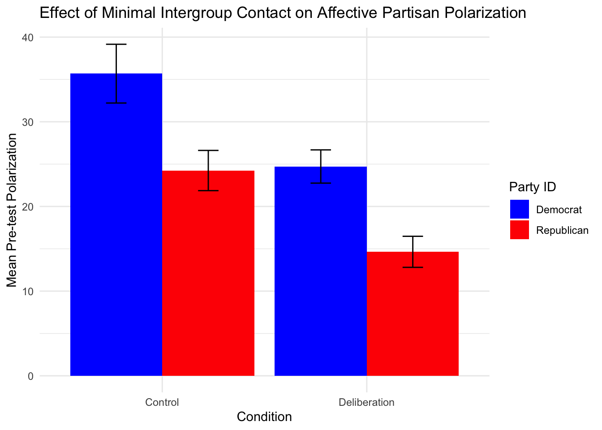

My goal is to use my First Year Project data to make a bar graph to show the mean pre-test polarization scores of participants grouped by condition (control and deliberation) and party affiliation (Democrat or Republican). Once I make the graph, I will interpret it.
Quite a bit of work in SPSS went into getting the data formatted the way I needed it to make a graph in R. After getting the data how I needed it within SPSS, I used the haven package to get the dataset into R.
I use the str() function to show the structure of my data (see below). It may not look pretty, but it shows that I have a tibble with 400 rows a 7 columns. It shows the 7 variables in my data set and shows the value labels for the variables that have them.
Note: Because I’ll be making a graph with polarization as the DV, bias and target are irrelevant variables. This is because polarization scores were computed by taking the absolute value of the difference in attitudes (bias) towards Democrats and Republicans (targets). So, a larger distance in attitudes (e.g., extremely postive towards one part and extremely negative towards the other party) produces a larger polarization score.
library(tidyverse)
library(tidyr)
library(haven)
partisan_bias <- read_sav("p01/data/LongData.sav")
str(partisan_bias)## tibble [400 × 7] (S3: tbl_df/tbl/data.frame)
## $ participant : num [1:400] 1 1 1 1 2 2 2 2 3 3 ...
## ..- attr(*, "format.spss")= chr "F1.0"
## ..- attr(*, "display_width")= int 13
## $ delib : dbl+lbl [1:400] 1, 1, 1, 1, 1, 1, 1, 1, 1, 1, 1, 1, 1, 1, 1, 1, 1, 1, ...
## ..@ format.spss : chr "F1.0"
## ..@ display_width: int 7
## ..@ labels : Named num [1:2] 0 1
## .. ..- attr(*, "names")= chr [1:2] "control" "deliberation"
## $ partyid : dbl+lbl [1:400] 1, 1, 1, 1, 1, 1, 1, 1, 1, 1, 1, 1, 2, 2, 2, 2, 1, 1, ...
## ..@ format.spss : chr "F1.0"
## ..@ display_width: int 10
## ..@ labels : Named num [1:2] 1 2
## .. ..- attr(*, "names")= chr [1:2] "Democrats" "Republicans"
## $ target : dbl+lbl [1:400] 1, 1, 2, 2, 1, 1, 2, 2, 1, 1, 2, 2, 1, 1, 2, 2, 1, 1, ...
## ..@ format.spss: chr "F4.0"
## ..@ labels : Named num [1:2] 1 2
## .. ..- attr(*, "names")= chr [1:2] "Democrat" "Republican"
## $ time : dbl+lbl [1:400] 1, 2, 1, 2, 1, 2, 1, 2, 1, 2, 1, 2, 1, 2, 1, 2, 1, 2, ...
## ..@ format.spss: chr "F4.0"
## ..@ labels : Named num [1:2] 1 2
## .. ..- attr(*, "names")= chr [1:2] "pretest" " posttest"
## $ bias : num [1:400] 12 17 64.3 60 30 ...
## ..- attr(*, "format.spss")= chr "F8.2"
## ..- attr(*, "display_width")= int 11
## $ polarization: num [1:400] 52.3 42.9 52.3 42.9 33.1 ...
## ..- attr(*, "format.spss")= chr "F8.2"
## ..- attr(*, "display_width")= int 14Because I know what I want my graph to look like, I know that the variables polarization, delib, partyid, and time will be important for making the graph.
However, I also know that:
I only want pre-test scores;
the graph won’t contain individual polarization scores, but will instead display mean polarization scores for four different groups (delib x partyid); and
I want my graph to have standard error bars to visualize whether differences between groups are meaningful.
Therefore, below I create a new data frame (pretest_pol_summary) which uses the data from my original dataset, filters it to contain only cases where time = 1, and contains the mean polarization scores and standard errors for participants grouped by condition (delib), party identification, and time (pre-test, post-test). The output shows the values that I want in my table (disregarding the ns).
pretest_pol_summary <- partisan_bias %>%
filter(time == 1) %>%
group_by(delib, partyid) %>%
summarise(
mean_pol = mean(polarization, na.rm = TRUE),
se_pol = sd(polarization, na.rm = TRUE) / sqrt(n()),
n = n()
)
pretest_pol_summary## # A tibble: 4 × 5
## # Groups: delib [2]
## delib partyid mean_pol se_pol n
## <dbl+lbl> <dbl+lbl> <dbl> <dbl> <int>
## 1 0 [control] 1 [Democrats] 35.7 3.47 36
## 2 0 [control] 2 [Republicans] 24.2 2.38 52
## 3 1 [deliberation] 1 [Democrats] 24.7 1.96 58
## 4 1 [deliberation] 2 [Republicans] 14.6 1.83 54Finally, below I use ggplot to create a bar graph using the pretest_pol_summary data frame, with condition (delib) on the x axis, polarization on the y axis (mean_pol), with fill color according to partyid. Stat = “identity” ensures that the bars represent the actual values of mean polarization scores and position = “dodge” ensures that the bars appear side by side. The error bars are created by setting minimum and maximum values using the mean and standard error values for each group. The remaining code sets labels for the groups on the x axis, colors and labels for the bar fill and components of the key, labels for the x and y axis and the key, and a title for the graph.
library(ggplot2)
ggplot(pretest_pol_summary, aes(x = factor(delib), y = mean_pol, fill = factor(partyid))) +
geom_bar(stat = "identity", position = "dodge") +
geom_errorbar(aes(ymin = mean_pol - se_pol,
ymax = mean_pol + se_pol),
position = position_dodge(0.9), width = 0.2) +
scale_x_discrete(labels = c("Control", "Deliberation")) +
scale_fill_manual(values = c("blue", "red"), labels = c("Democrat", "Republican")) +
labs(x = "Condition", y = "Mean Pre-test Polarization", fill = "Party ID") +
ggtitle("Effect of Minimal Intergroup Contact on Affective Partisan Polarization") +
theme_minimal()
The bar graph above represents pre-test polarization scores of Democrats and Republicans in a control group and deliberation group.
At pre-test in the deliberation condition, participants were seated at a table with equal numbers of Democrats and Republicans but had not yet done the deliberation exercise (a structured, goal-oriented conversation on political topics).
At pre-test in the control condition, participants were alone.
Therefore, the overall difference in pre-test polarization scores between control and deliberation participants represents the effect of minimal intergroup contact on affective politcal polarization.
We can see from the graph that, within condition, there is a main effect of party affiliation such that Democrats are more polarized than Republicans in both the control and deliberation conditions.
We can also see that, within each party, there is a main effect of condition such that control Democrats are more polarized than deliberation Democrats and control Republicans are more polarized than deliberation Republicans.
We cannot say from this graph, however, whether there is an overall main effect of condition on pre-test polarization.
Disclaimer: Claude and ChatGPT helped me with this assignment by providing options for code. When using code generated by Claude or ChatGPT, I also used Claude/Chat to help me understand what the code was doing. I believe I (mostly, hopefully) demonstrated adequate understanding of the code in my descriptions.